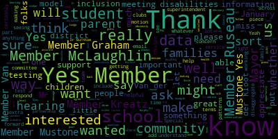
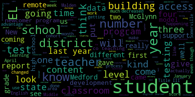

AI-generated transcript of Organizational Meeting & Regular Meeting of the Medford School Committee
English | español | português | 中国人 | kreyol ayisyen | tiếng việt | ខ្មែរ | русский | عربي | 한국인
Back to all transcripts
[Unidentified]: Good evening, everybody.
[Lungo-Koehn]: Looks like we have all seven members present. It is 5.46 and we are recording. We have Medford School Committee meeting January 11th, 2021. Organizational meeting at 5.45 p.m. Regular meeting at 6 p.m. by Zoom. Pursuant to Governor Baker's March 12th, 2020 order, suspended certain provisions of the Open Meeting Law, Chapter 30A, Section 18, and the governor's March 15th, 2020 order imposing strict limitations on the number of people that may gather in one place. This meeting of the Medford school committee will be conducted via remote participation to their greatest extent possible. Specific information, the general guidelines for remote participation by members of the public and our parties with a right and a requirement to attend this meeting can be found in the city of Medford website at www.medfordma.org. For this meeting, members of the public who wish to listen meeting may do so by accessing the meeting link contained herein. No in-person attendance of members of the public will be permitted, but every effort will be made to ensure that the public can adequately access the proceedings in real time via technological means. In the event that we aren't able to do so, despite best efforts, we will post on the City of Medford and Medford Community Media websites an audio or video recording, transcript, or other comprehensive record of proceedings as soon as possible after the meeting. The meeting can be viewed through Medford Community Media on Comcast Channel 22 and Verizon Channel 43 at 5.45 p.m. Regular meeting of the Medford School Committee virtual information, 6 p.m. Since the meeting will be held remotely, participants can log or call in by using the following link or call-in number. One of the call-in numbers is 1-929-205-6099. Enter meeting ID 998-7212-9468 when prompted. Additionally, questions or comments can be submitted during the meeting by emailing medfordsc at medford.k12.ma.us. Those submitting must include the following information, your first and last name, your Medford Street address, your question or comment. Roll call vote. Member Van der Kloot, do you want to just take over? Jenny Graham?
[Van der Kloot]: Here. Kathy Kreatz? Here. Melanie McLaughlin. Yeah. Me and the stone.
[Ruseau]: Her audio isn't working.
[Van der Kloot]: Got it. Thank you. Mia is here. Paul Russo.
[Ruseau]: Yes, here.
[Lungo-Koehn]: Paulette Van der Kloot present and may along go current present seven present Xerox and if we could rise and salute the flag. I pledge allegiance to the flag of the United States of America and to the republic for which it stands, one nation, under God, indivisible, with liberty and justice for all. Do I have a motion on the floor?
[Kreatz]: Yes. Mayor, I move to nominate Paulette Vandeclude as vice chair.
[Lungo-Koehn]: Second. Motion to nominate member Van der Kloot as vice chair, seconded by member Kreatz, seconded by member McLaughlin. I can call the roll. Member Graham?
[Van der Kloot]: Mayor? Yes. You should first ask if there are any other nominations, and then the nomination has to be said by saying the name.
[Lungo-Koehn]: Correct. Are there any other nominations for vice chair? And yes, please state the name on both this and for secretary. Member Graham.
[Graham]: So I say the name of the person I am nominating, is that correct? that I'm voting for?
[Lungo-Koehn]: Yeah, if you have another nomination, then you put it before the vote. I don't.
[Graham]: No, I'm just asking about, okay. So Paulette Van der Kloot.
[Lungo-Koehn]: Member Kreatz.
[Kreatz]: Paulette Van der Kloot.
[Lungo-Koehn]: Member McLaughlin. Paulette Van der Kloot. Member Mustone. Paulette Van der Kloot's a thumbs up. Member Ruseau.
[Ruseau]: Paulette Van der Kloot.
[Lungo-Koehn]: Member Van der Kloot. Paulette Van der Kloot. And myself, member Paulette Van der Kloot. Seven for in favor of member Van der Kloot being our 2021 vice chair. Congratulations.
[Van der Kloot]: Thank you very much. I did speak to Member Ruseau earlier today, and we agreed that if any letters come in today, since I wasn't familiar yet with the process, that he would read them today. And I'll take over in the future. And you'll be the secretary one more night?
[Lungo-Koehn]: No, I'm kidding. I'm kidding. Is there a nomination for secretary of the Medford School Committee for 2021? I nominate Melanie McLaughlin. Second. Member McLaughlin is nominated by Member Van der Kloot, seconded by Member Kreatz. Are there any other nominations? Hearing and seeing none, I will call the roll.
[Graham]: Member Graham? Member McLaughlin? Member Kreatz.
[Healy]: I just closed it.
[Graham]: Member McLaughlin.
[Lungo-Koehn]: Shout out everything. Member McLaughlin.
[McLaughlin]: Yes. Member McLaughlin.
[Lungo-Koehn]: Member Mustone. Member McLaughlin. Mia, that's the best audio you've had so far. Oh, thank you. I'm using Teagan's laptop. The kids have better stuff than us. Member Ruseau.
[Ruseau]: Member McLaughlin.
[Lungo-Koehn]: And Member Van der Kloot. Member McLaughlin. I'd also like to put my vote to Member McLaughlin. So we have Member McLaughlin, seven in the affirmative, zero in the negative. Member McLaughlin will be the 2021 school committee secretary. Congratulations. Number two, we have approval of minutes. December 21st, 2020, which was our regular school committee meeting.
[Ruseau]: Motion to approve.
[Lungo-Koehn]: Motion to approve by Member Ruseau, seconded by Member Van der Kloot. Roll call.
[McLaughlin]: Member McLaughlin, do you want me to do it? Okay, sure. Member Graham? Yes. Member Kreatz? Yes. Member McLaughlin, yes. Member Mustone? Yes. Member Ruseau? Yes. Mayor? Yes. have to get a little bit. Used to this number Vanderclue.
[Lungo-Koehn]: Yes.
[McLaughlin]: Thank you.
[Lungo-Koehn]: Seven in the affirmative zero in the negative. Minutes are approved. Mayor member Ruseau.
[Ruseau]: Thank you. I just wanted to, um. Member McLaughlin probably does not have a pad for the vote pre printed pad with our names, but you can write what it is and then do the votes on that. Um, so I just, um, want to make sure that one that Susie or Lisa or somebody is taking the votes down and not relying on those pads.
[McLaughlin]: Thank you. I am. Um, thank you. May I, ma'am? Yes. McLaughlin. Thank you, Member Ruseau. I am recording them on a Google Doc and also on my notebook in the interim. And I'm sure Susie is in her minutes as well. But if there's a formal stationery or something that folks want me to use, that's fine. I can pick that up at the central administration, assuming there are some there, Superintendent or Susie.
[Edouard-Vincent]: Um. We'll definitely get the stationary to you. But for the purposes of today, we'll have between Susie and Lisa will have, you know, backup in terms of recording that information.
[McLaughlin]: Thank you. And then may I just ask or I can ask offline. I just how the forms are submitted, but I'll ask that later. Thank you.
[Lungo-Koehn]: Number three approval bills, transfer of funds and approval of payrolls.
[Unidentified]: Motion to approve.
[Lungo-Koehn]: Motion to approve by member Kreatz. Seconded by member Van der Kloot. Roll call.
[McLaughlin]: Member Graham. Yes. Member Kreatz. Yes. Member McLaughlin. Yes. Member Mustone. Yes. Member Ruseau. Yes. Member Van der Kloot. Yes. Mayor Lungo-Koehn.
[Lungo-Koehn]: HAB-Masyn Moyer): Yes, 70 affirmatives here in the negative approval bills and transfer funds have been an approval payrolls has been approved number four report of secretary.
[Van der Kloot]: I just wanted to – I was in signing the bills last Wednesday. Finally, a lot of bills came through for food service, which I had been sort of on the lookout for, so I was glad to see them. Everything else seemed to be in order. I want to thank all of the secretaries, particularly Gina Citrano, who sort of helps organize the bills for me, but everybody who is involved in the process of getting the bills together and making sure that we are in order and our bills are being paid as they should be appropriately. There's a lot of paperwork involved and I just am very appreciative.
[Lungo-Koehn]: Thank you. Member McLaughlin?
[McLaughlin]: Yeah, I just also wanted to add, you know, thank you to member Ruseau for his service as vice chair in the past session and to member van de Kloet and her service as secretary in the past session, because there is extra work involved and just wanted to say we appreciate that, thank you.
[Lungo-Koehn]: Thank you. We have number five, report of committees. Six, I don't know, we don't have any reports on the committee. Up next is community participation. Again, public participation emails, questions or comments can be submitted during the meeting by emailing medfordsc at medford.k12.ma.us. Those submitting must include the following information, your first and last name, your Medford Street address, your question or comment. Member Ruseau, do you see any yet?
[Ruseau]: Yes, we have one. This is an email from Sarah Florence of Marion Street in Medford. I hope this. Hello everyone I hope this message finds you well in these strange times. I wrote last spring in support of the resolution to change the name of the Columbus Elementary School I was surprised by the length of the debate, but the solution ultimately passed. I understand that this issue is not the name change. It's not anyone's top priority at the moment, but I also feel that you made a commitment to the community to make this change. I have missed multiple deadlines. I would appreciate an update. Whether still be a committee to choose the new name. Can we still expect the name change this summer? Thank you.
[McLaughlin]: I make a January 26 agenda so that we can discuss and respond to the email.
[Lungo-Koehn]: Absolutely. I plan on responding to I can reply all I didn't get to that today, but I will. I know we're through another 20 subcommittees. We have a committee of the whole meetings we have to schedule and vision committee was up first. So do I have a second? Second second seconded by member Graham roll call.
[McLaughlin]: Oh, that's me. This is going to be tricky. I'll get used to it. Member Graham? Yes. Member Kreatz?
[Unidentified]: Yes.
[McLaughlin]: Member McLaughlin? Yes. Member Mustone? Yes. Member Ruseau?
[Unidentified]: Yes.
[McLaughlin]: Member Van der Kloot? Yes. Mayor Lungo-Koehn?
[Lungo-Koehn]: Yes, seven in the affirmative, zero in the negative. paper passes, so we'll be on the 1-26 agenda. Number seven, we have report of superintendent's updates and comments.
[Edouard-Vincent]: Good evening, everyone. Happy New Year. It is my hope that 2021 will bring with it much happiness and good health for all in our Mustang family and the Medford community at large. However, the year didn't exactly begin as we had expected. It started promising with the arrival of the vaccine, but no matter what your political leaning, the events that transpired last Wednesday at the United States Capitol was a horrendous show of the very worst of America. I am, as the majority of people in our country, a child of immigrants. My parents immigrated here from Haiti in the early 1960s. This type of action, what transpired last Wednesday, I would always say to myself, does not happen here. For the first time ever, the Confederate flag entered the United States Capitol building, the seat of our government. Our democracy, which has always been the shining star in the world, was damaged. It was scary, unsettling, and it once again shed light on both the fragility of our democracy while also bringing to the forefront the inequality in our country. As Vice President-elect Kamala Harris stated, it is just one example of blatant social inequity in the United States. Additionally, we have known for generations that much has to be done to create a more just, equitable, and unified society. The Medford Public Schools, we are committed to engaging in conversations that will promote understanding across lines of division. We will support our students and teach them to be leaders against hate while working aggressively to address racist beliefs, practices, and systems. Next week would have been the 92nd birthday of Dr. King. January 15th is his official birthday and we're celebrating it on the 18th. Dr. King said, we must learn to live together as brothers or perish together as fools. I believe that it is imperative during this time of heightened stress and anxiety that we provide the structure and support that our children require right here. Unfortunately, as all of us know, we are facing a surge with the COVID-19 cases, even here in Medford. We're aware that there's an uptick and we are working diligently to prepare for the safe return of hybrid staff and students when they come back to our buildings on Thursday, January 14th. We are continuing with all of our safety protocols to allow for this to happen. To that end, I again encourage all hybrid students to come to their schools for testing prior to their return to in-person learning. I've stated in many updates and commercials and in the communications that have gone out, if you have not completed a consent form, please do so. You can email it, you can drop it off at the school. Testing is going to take place tomorrow from 1 to 5 p.m. That's for all staff and students in cohorts A and C. And again, on Friday, from 1 to 5 p.m., we're going to test all students in Cohort B. For our incoming freshmen, testing can be accessed through the West Courtyard entrance. For our freshmen, their first time coming to the Medford High School Complex, there will be a freshman orientation this Wednesday, January 13th for ninth grade, and a detailed schedule was sent out to all students from Mr. Principal Paul DeLeva, And although the focus will be on cohort B and C students, we welcome cohorts A and D students to participate in the freshman orientation. Principal DeLava and Principal Fallon will welcome all the students, discuss COVID safety protocols, student schedules, and conduct socially distanced tours throughout the building. On a different note, I wanna remind our parents and guardians that students who qualify for free and reduced lunch under the National School Lunch Program, whether you are hybrid or fully remote, please know that the P-EBT funds are available to you until the end of this school year. For those who might have questions about this assistance, please contact the Department of Transitional Assistance at 877-382-2363. That's 877-382-2363. Last week, on Thursday, Mayor Lungo-Koehn, Principal DeLeva, Dr. Riccadeli and I had the pleasure of welcoming Mr. Adamo Castellanuevo, Director of the Consul General of Italy's Education Office to the Medford High School. Mr. Castelnuovo presented the mayor with a check in the amount of $24,000 US euros. It was 29,477 euros. Last June, Dr. Riccadeli, who oversees the World Language Department, worked with lead teacher Vilma Bobo, who was fluent in Italian, to submit a grant application for direct funding from the Italian Ministry of Foreign Affairs connected to the Consulate General of Italy. Medford was selected to receive the highest funding amount of any school district in the entire country, based upon our strong support of our district-wide Italian language program. We are so appreciative and extend our sincere thanks to Federica Serrini, the Consul General of Italy, Director Castelnuovo, and the Italian Ministry of Foreign Affairs for their generous support of Medford's language program. As Dr. Riccardelli reported to you at the last meeting, the funds will be used to defray the cost of the advanced placement Italian program at the high school level for school year 2020-2021. In addition, last month, Tufts University Office of Community Relations hosted a holiday charity raffle. Residents were asked via Facebook, the Tufts Facebook page, to nominate a nonprofit organization to win a $500 prize. The nonprofit that had the most nominations in Medford was the Medford Family Network. Congratulations to our own Marie Cassidy and her staff. who have continued despite COVID to provide important services to our families. And thank you to Tufts University for providing this wonderful donation to Medford Family Network. Thank you for all of you who voted for the network as well, Medford Family Network. Last Thursday, Our district attorney, Marion Ryan, invited me to take part in a professional development training for incoming assistant district attorneys that focused on the effect of school discipline on black girls. Joining me on the panel was Melanie Rush from the Appleseed Center, who discussed the study they completed highlighting the disproportionate impact of school discipline on black girls. Superintendent Christine Elow of the Cambridge Police Department, who discussed the importance of establishing connections between students and the police. Dr. Yvonne Spicer, Mayor of Framingham, who was also an educator, and she discussed how our different educational roles have assisted her in her new role as a Chief Executive Officer of her city. I discussed the importance of inclusivity and equity here at the Medford Public Schools. It was wonderful to have been asked to participate in this important and substantial conversation with the young assistant district attorneys of Middlesex County. Just prior to our winter break, DA Ryan also hosted the first virtual Cut It Out program with the vocational cosmetology and health assisting students. We appreciate the continued collaboration we have with our district attorney's office. Despite COVID, our CCSR students continue to find ways to improve our community. Nathan Quinn and Charlotte Foti, sixth graders at the McGlynn and Abigail Charlton, a sixth grader at the Andrews. noticed that the majority of the little free libraries around the city featured books for an older audience. So they held a book drive for middle school age students collecting a remarkable 249 books. They have distributed the books to the little free libraries around Medford and plan to continue to do so over the next months. Great job, Nathan, Charlotte, and Abigail. Thank you for your advocacy and your leadership and replenishing the book supplies and the little libraries to encourage reading during this COVID time. So congratulations to you and thank you so much. I would like to close my remarks this evening with a quote from President Abraham Lincoln. It's from his first inaugural address given back in 1861 and rings true, especially after last Wednesday's riots. We are not enemies, but friends. We must not become, we must not be enemies. Though passion may have strained, it must not break our bonds of affection. Let us all please remember that, united we stand, divided we fall. Thank you.
[Lungo-Koehn]: Thank you, Dr. Edouard-Vincent.
[Ruseau]: Mayor?
[Lungo-Koehn]: Member Ruseau.
[Ruseau]: Oh, actually, I apologize. I'm too early for what I wanted to say.
[Lungo-Koehn]: Number two, we have a COVID-19 public health update and Medford Public School COVID-19 testing summary and update given by nurse supervisor, Ms. Toni Rae and Medford Board of Health director, Ms. Marianne O'Connor, as well as Mr. David Murphy.
[0SdCkR9KuqQ_SPEAKER_06]: Hi, this is Marianne. I think I'll let Toni go first on the school update and then we'll go into the community update if that's okay. Sounds great.
[Wray]: Sounds great. Good evening, Mayor, Superintendent and members of school committee in the community. I'm going to give a summation of the COVID activity in our schools between December 22nd and January 10th. Medford Public Schools tested 900 students and staff on Tuesday, December 22nd, and we reported two positive student cases from that testing. On that date, there were no staff that tested positive. Between December 23rd, the start of the holiday vacation, and January 10th, we've reported 79 positive COVID cases to the Department of Education. This is very consistent with the activity that is going on in the community. All the cases received follow-up instructions about isolation procedures and quarantine procedures for their close contacts from our school nurse contact tracers. The 79 cases included 16 staff members and 63 students. I have two reminders that I would like to make about the COVID testing that starts again this week. Please do not send your child or if you are a staff person, do not come for testing if you are showing any illness symptoms. Ill children and staff and families are advised to call their primary care physicians or go to a stop the spread testing site if you're feeling ill. Also, as we resume hybrid learning, I want to remind our community to stay home from school if you feel ill with any symptoms. This applies to staff and students, and our ability to reduce COVID transmission within the schools is very dependent upon keeping the illness out. So we would like everybody to do their part in achieving this. Thank you. Thank you, Ms. Ray.
[0SdCkR9KuqQ_SPEAKER_06]: Ms. O'Connor?
[Lungo-Koehn]: Yeah, it's Marian O'Connor.
[0SdCkR9KuqQ_SPEAKER_06]: That's okay, I can go with the community update right now. So to follow up with what Tony has said, so as the superintendent had already stated earlier, we are definitely in a surge. You know, regardless of the public health warnings and headings of not gathering for the holidays and not traveling Unfortunately, we are in a search. So since 1223, which I believe was the break from school to today at 530, we've had 720 cases in the community. So that's 720 cases in 20 days. However, I did break them down. And looking at the school age population, like Tony said, out of those 720, I went from zero to 19. All right, and then I can break that down more for you, but from zero to 19 out of the 720, there's 97 cases. If you wanna look at just the five-year-olds, So the 19-year-olds, that's four, two, three, four, sorry. That's 77 cases. So as Tony said, school-aged folks, I did include 19-year-olds. There were 31. If you take out the 19-year-olds, there were four of them. So there's only 31 in the 15 to 18-year-old category. So anyways, So it's a small percentage is my point, I guess, what I'm trying to get at out of the 720. Really the majority of our cases were the 20 and 30 year olds, again, as we had been seeing previously. I do wanna thank the school nurses for all their help over the break, especially for the contact tracing. They've been incredible as far as following up with all the students and children and their families. Obviously not all of those, school-aged kids were Medford school children. There are certainly some private schools involved as well. But as you know, and you probably have seen last week's report from the state put us in the red. And we knew that was coming. We're at a 5.56% positivity rate now according to the state data. And we're expecting that'll probably be close to the same this week as well. And there were 520 cases reported during that time period. So we're in a search. Unfortunately, we expected this with the holidays, which is why we delayed the opening a bit. And I'm glad that we're testing this week. It's gonna be interesting to see what and how many we catch. Most of this that we've seen in the community has been household spread. It's mostly, you know, you'll see it two, three, four, five, even six people within a household are getting, are becoming positive. And that's what a lot of these cases are. It's really a lot of household spread. Once it's in the house, like we've seen before, it seems to spread pretty rapidly. Other than that, I'm happy to announce that we are doing our first responder testing this Thursday. We are in a regional effort with Malden, Melrose, Wakefield, Stoneham, and Winchester to vaccinate our first responders, police, fire, and EMS. The first one kicking off right here at the Medford Police Station, Thursday morning and Thursday afternoon. And also happy to say that all of our school nurses are included in that program because they are COVID facing, because they are doing the surveillance testing, because they're involved in the surveillance testing and anyone involved with that as far as, you know, the helpers or management people there that anyone COVID facing is allowed to be vaccinated, which is great. So all of our school nurses will be receiving their first vaccination if they haven't already due to other, duties will be receiving it Thursday. So that's terrific. K through 12 workers, teachers, are slated by the state. And again, we are at the mercy of the state as far as when we get vaccine and when we're able to vaccinate. But they are in the state's plan for phase two of K through 12. They are actually second in line in phase two, right behind the 75 plus and folks with two comorbidities. So we will be working to get that done as well. And I'm sure I'll be working with Tony and the school nurses to accomplish that, much like we've done the testing. So more to come on that as soon as we know, you'll know, but we are at the mercy of the state as far as information goes. And that's expected around early February. So again, so happy to take any questions, thoughts, concerns.
[Murphy]: Mayor, before we go to questions, could we just touch upon our testing program and how we're gonna be rolling that out over the next couple of weeks?
[Lungo-Koehn]: That'd be great if you could give the dates and in case any parents are watching, that'd be much appreciated. Thank you.
[Murphy]: Sure. So as the school committee knows, and I know many in the community are familiar, we have been running staff testing throughout the district since September on a weekly basis and began student testing in November. We've been working over the past couple of months with the Department of Education and other partners, including Tufts University, to talk through what we're doing in the Medford public schools. And we were recognized by Commissioner Riley last week as one of the districts that have been out front with regard to our testing. That is in large measure due to all the work that Tony and Marianne have been reporting on. to the committee over the past couple of weeks and that their teams have been involved in throughout each school over the course of the past several months. And we will be speaking with other districts across the Commonwealth tomorrow in a webinar to talk a little bit about what our experiences have been with respect to testing and what we are anticipating with our continued testing over the next several weeks and several months. And as has been communicated several times, including in correspondence that went to all staff and all families today from Ms. Ray, we will do re-entry testing tomorrow from 1 p.m. till 5 p.m. at all schools, with the exception of the Curtis Tufts, but that school community has been given a specific communication and instructions as to how their staff and students can get their tests. But with that exception, all schools 1 p.m. till 5 p.m. for cohorts A, high-need, most vulnerable students, cohort C, students who typically attend in-person instruction on Thursdays and Fridays, and all Medford Public Schools staff, consistent with the testing that they have done, as I said, since September. Cohort B students will have the opportunity to receive their reentry tests on Friday, January 15th, from 1 p.m. till 5 p.m. That is again at all schools. And then we will continue with our regularly scheduled weekly testing on Tuesday, January 19th, following the holiday, and pick that up again going forward. As of right now, we anticipate the transition to pooled testing to happen on the week of January 26th. So we'll have two more weeks, including the re-entry testing that takes place this week, and our regular testing that takes place next week, our individualized testing, and then we'll switch to the pooled testing the week of January 26th. That's our plan as of right now. With respect to pooled testing, and we'll be communicating a lot of that out to families and staff, there is very little difference, as we were discussing with our administrators today, at the initial point of collection with regard to individual testing and pool testing. The difference comes in what happens in the follow-up after that, where individual in a pool or a pool test positive. And what that means is for anyone who hasn't followed this closely, and they can absolutely understand why you may not have, a pool testing means all of the swabs going into one vial. They are then tested together. And if there is positivity, identified within that pool, the entire pool is contacted and given directions as to how to go about getting a follow-up test on the following day. And the protocols are for that pool to be quarantined up and until they receive their negative test, which again, there'll be a designated follow-up testing location. We call it the reflex testing that will take place on Wednesdays and Saturdays. following our Tuesdays and Fridays. That's why we established Tuesdays and Fridays as our testing days because we have a remote day on Wednesday and obviously the weekend on Saturday to give people that window of time to get their follow-up tests. There are some specifics from an operational perspective that we still need to work out with regard to the location of the designated testing spot for the reflex testing and exactly how that's gonna play out. And those are conversations that we're gonna continue to have over the coming days But for our community members, there are no implications for the next two weeks, because we're just going to continue doing the same testing program that we've done over the last several months. And when we iron out those final details as to where to send people when a pool tests positive, that's something that we'll be communicating out broadly. Just in terms of final reminders, we still want to get to 100% with regard to consent forms. I think the superintendent, Tony, and I were pleased when We were on a conference call with a couple of other district representatives, districts that don't need to be named, and our consent form intake was at a higher percentage than some of the others on the call, but we're not at 100% and we're hopeful that we'll be able to get there in the coming days.
[Lungo-Koehn]: Great, thank you very much. Member Ruseau?
[Ruseau]: Thank you. A couple of questions and then there's also several emails, but I'll let those come after everybody else has spoken. I know that you're still working out the logistics around the reflex testing when somebody in a pool is positive. I'm just wanna be, what I'm hearing that has been worked out is that we are depending on families on a Wednesday or over the weekend to go get their kid tested. And I don't, you know, It's concerning because some families may not do that or be able to do that. But my question is, let's say there are 10 people in the pool test, one of them is positive. Are we allowing those 10 people back before they have all, if one of those families does not go get a reflex test, are they allowed back in our building?
[Murphy]: So under the protocols, Mr. Rousseau, the answer would be no, that if they're part of a pool and have not yet shown a negative test as part of the reflex testing, the expectation is that they would not come back into the building. Now, while the protocol is to get tested the following day, most, although not all students, would not be due in for another five days. It's a little more challenging with staff, and obviously with the Cohort A students, the expectation is they're back on Thursday. And I think that is, It is absolutely one of the downsides of the pool testing, I think. The rationale to the pool testing for both the district and the state is sustainability, that it is dramatically different in terms of the financial resources. And we are, one of the reasons we haven't ironed out, finalized those details, and one of the reasons that we will in the near future need to make a strategic decision as to whether to participate in the program that DESE is constructing is that we want it to be as easy as possible for our families to get the reflex testing. And so if the DESI program, and again, we've been advised on multiple occasions that the DESI program is still trying to work out some details, and that's why it's unclear whether we would essentially want to volunteer to participate or not. But what we'll be looking for to make that determination is whether it is operationally set up to be as less of a burden as possible for families for several reasons, but one of them is what you're identifying as a downside to pool testing.
[0SdCkR9KuqQ_SPEAKER_06]: And just to interject, and I know I may be stating the obvious, this is Marianne. If there's a positive pool, it doesn't mean there could be more than one positive in that pool, right? It doesn't mean that there's just one, there could be two, three. So it is really important that everyone gets that follow-up testing.
[Lungo-Koehn]: Member van de Kloot? Oh, just unmute.
[Van der Kloot]: How many people are in the pool or expected to be in the pool?
[Murphy]: At least eight, and we think 10. That is one of the things that scientists are discussing in their laboratory right now. And as the technology improves, there's potential for more swabs in the vial. which would be great because that's less of a budgetary impact, obviously. But typically, those who are working on the technology and the science behind this right now are using a window of eight to 10 swabs in a vial. Thank you. Standing is 10 is the max at this point.
[Lungo-Koehn]: Member Graham? Unmute yourself, Jenny. Member Graham, please.
[Graham]: Sorry, I thought I did that. When you talk about pooling folks, has there been discussion about pooling siblings in the same pool? I know that's obviously can't be done like cross building, but is there a way to pool families within a building so that at least they're not sort of getting potentially snared by multiple pools?
[Murphy]: Yeah, so we've looked at, we've had a few different discussions about whether our cohorting of students should have any relation to the cohorting that takes place when the testing is pooled. And generally speaking, everyone, and when I say we, I'm talking about some of the folks on this call, but also the conversations that we're having with other districts. some of the partners that are involved in developing the technology and the partners that are involved in operationalizing this, which it was their advocacy in part that built the conversation with DESI that is responsible for the program that's being rolled out across the Commonwealth now. And the prevailing view right now is that the efficiency cost to trying to do anything other than putting the eight swabs in a vial is essentially not worth it. That particularly with the virus rates being what they are, that we're better off. And what I mean by that, frankly, is that while we are in the midst of a surge and that the numbers are high, our in-school transmission is low enough in which we can operationalize pool testing. But part of that is essentially putting the eight to 10 swabs in a vial, filling up as many vials as possible, and then getting the vials out the door to get tested. the time that would be lost by trying to coordinate and the potential cost of unfilled vials that aren't filled to the maximum capacity is considered to outweigh the potential convenience that would be enjoyed by families if everyone was together. The other thing I would say is Well, it is not true that if a sibling has COVID, everyone in the household must. We know that, obviously. Most of us have had one experience or another where that's been demonstrated, where somehow people, despite living in the same household, don't spread it around. If they're in the same school, and we wouldn't be talking about this if they're not, and they're coming from the same household, there is an increased chance that they're going to be positive, which means that the pools, their families are going to be dealing with the same challenge and the same problem. So the answer is it's been thought about that there are some upsides, but not probably not worth it.
[Graham]: Okay, that makes sense. Thanks for that answer. And you also said earlier that our participation is good, but it is not 100%. What percent is it? It is...
[Murphy]: within the vicinity of 80% consent forms. And I would want to go back and look at numbers that have come in over the last few days. We're not getting a lot of consent forms. We're fully remote right now. But I would like to get back to it. It's in the vicinity of 80%. I can say on a conference call with Desi, I said it was 80%. And then as that was being heralded, it occurred to me that maybe I wanted get the exact number, but it is very close to 80%.
[Lungo-Koehn]: Okay.
[Murphy]: It may be over, it may be over.
[Lungo-Koehn]: Yeah, and it was over 1,700 students have signed up, and Ms. Frey just quote me from around four to 500 teachers or staff, or 450 or so. 400 to 450 staff. Okay.
[Graham]: And has there been discussion across districts or with other superintendents about making this kind of testing mandatory as a condition for in-person learning? And what's your thinking about that?
[Murphy]: So there has been discussion. I think that discussion is going to continue. I think the problem that we and other districts have run into is that families it's very hard to impose a condition ex post facto. And while we do have the remote learning option that is available, and we are currently not structured to withstand a disproportionate influx of remote learners into all of our remote learning settings, particularly at the elementary level. And so given that we, I think it would be really hard to halfway through a school year impose that type of, when we logistically can't necessarily offer an alternative option and excluding students on this basis on such short notice, I think is definitely not viable. So I think that, I do think that it is conversation we will need to have this spring and over the summer, depending on where we are with the virus going into next school year. when all options are back on the table and families can make potential, you know, we can first determine what decisions the district and the Commonwealth are gonna provide the families or what options rather, and then make sure that families have all the information available to them. And that's certainly not a, you know, we didn't have this information, we didn't have, some of these testing strategies weren't even developed at the time that schools were making learning, you know, plans and providing options to families. So I think that's, that is the, hesitancy as to whether to wrestle that particular issue. And in the in the lieu of that wrestling match, we have been pushing strongly encouraging and asking principals to continue that dialogue with their families. Because while we certainly want to provide this opportunity for people to stay healthy, this is really a public health obligation that we all have. It is not so much about testing, because this is actually one of the sort of interesting conundrums of testing. It's not really about keeping you safe. By the time the swab goes into your nose, you either have it or you don't. And so this is about a community responsibility that we all have to one another. And I think that's something that they'll write really interesting articles about in the future.
[Graham]: Yeah, absolutely. I if for those who are listening, I, I can't request strongly enough that everyone participate in this program like we are so lucky to have this program in Medford, I get emails every day from school committees across the state that. They have to go full remote because they just can't figure out, they can't isolate how their case counts are happening, where it's happening in schools. And they just have no choice but to make these really broad brush decisions. And I think we've been really lucky here that we can make really targeted decisions about this. And if you haven't signed up for testing yet, please do it. it is life-saving. It may not save your life, but it may save somebody else's life. So please seriously consider that. And then the last question that I have.
[Murphy]: I just want to say thank you for echoing that because, you know, the principals know this. We have, and teachers as well, been looking at every sort of communication avenue and sort of trying to identify who's the best messenger and how do we sort of really craft that message in a way where people can understand the importance of it. And I think we all greatly appreciate you, all members of the testing family.
[Graham]: And then my last question about testing is whether cohort D families can test this week.
[Murphy]: And the answer to that is no. And that goes to the sort of public element that we were talking about. I think this district and the municipal government and all other community entities would love to provide this, but from a financial perspective, while I think our testing program has run well, I think we've done a good job, we've also been patching it together. And one of the key variables that has changed, that is changing this week and going forward is a partnership that Ms. Ray cultivated with some higher ed institutions and a large influx of volunteer student nurses who are helping us to staff this and execute this, which we know other districts, even in response to Dessie's rollout of this program, have been unable to, they've been unable to do because they just don't have the personnel needs. We don't necessarily, up until this point, we haven't necessarily had the personnel either. We've just told a bunch of other people who typically do other stuff that they now work the testing registration desk. And I think it's been heartening to see the extent to which people have been willing to dive in and take this up as an unexpected responsibility that everyone in the organization has. And I think that without that partnership that Tony's developed, there would be real questions about the sustainability.
[Edouard-Vincent]: Awesome, thank you. Dr. Edward-Vincent? Yes, I just wanted to take this moment also to thank you, the school committee, for your support during this entire journey because we were kind of one of the districts that was the first one out of the gate. So thanking you for your leadership with that. We have been kind of quietly tapped on the shoulder by Desi, which Mr. Murphy alluded to. Tomorrow we will be part of a webinar with other districts. talking about the work that we have been doing here in Medford and how it's working for us to be able to help other districts think differently and how were we able to do it because it was a tremendous feat. And so just in this moment, I want to thank our nursing supervisor, Toni Wray. It's seven days a week. I get texts over the weekend. Maryann O'Connor texting me as well from the Board of Health on the city side. And, you know, Mr. Murphy and his team, this was, no one thought that this would be such a huge task and undertaking, but we prioritize safety, equity, and consistency, and testing fell under the bucket. And so we're continuing to prioritize that to the best of our ability. So I just want to thank you, the school committee, the mayor, the city side for their support of paying for the testing the partnership with Tufts, but really I just want to say thank you because now the other districts that have found themselves with no choice but to have to shut down or no way to contact trace. They did not have a system in place to remain open. So I just wanted to let you know that we are doing what very, very few districts have been able to do. And they're now asking us to share what we've learned, our best practices to help other districts strategize and be able to come up with it, come up with something for their respective communities. So I just wanted to say thank you to everyone who's been helping with the testing and keeping our community safe.
[Lungo-Koehn]: Thank you Dr. Edward-Vinson for all your hard work as well. It does not go unnoticed. It's definitely a team effort. If I may ask a question, I think everybody, can you give some logistics about this Tuesday and Friday testing? just any questions, little questions that have come in that maybe we can clear up. For example, if I'm a mom and I have somebody in elementary school, middle school, and high school, do I go to all three locations or can I get them all tested in one place? What are we looking at for where, are we ready for having lines to have people waiting and then we're going to wait outside, kids on the playgrounds. If we could just kind of talk through anything that you're hearing and maybe answer those two questions, that will be helpful for all those who are listening and getting ready to pack the kids in car or walk to get their kids tested.
[Murphy]: And when they do, they can go to one location. The siblings have been specifically identified. So if you have children in multiple schools, you can choose the one that's most convenient. and they should be able to get tested in whatever school you go to. If there are other specific exceptions to that, I would just ask that you email your school nurse or principal. They'll pass those on to us. So generally speaking, we want people to go to their home schools that they attend. That's for crowd control purposes, occupancy, keeping the lines are set up and the signage is out to make sure that we don't have any overcrowding. I would suspect that in history is sort of borne out over this testing program that people participating in COVID testing like to get there early. And so it's probably more likely that there'll be lines in the earlier part of the one to 5pm window than at the later part. So If that's a concern, I would encourage you to go between 3 p.m. and 5 p.m., and then you can let me know if I was wrong about that, but that's been the case every week pretty much since September. Again, if you have children in multiple schools, you can choose one and go there. Some of the testing stations have been moved from their normal locations to be closer to exits and entrances, so you can come and go more easily. it is possible, as I said, that the line might extend outdoors in some for purposes of maintaining the six feet of distance. But I think that should be probably only at the beginning and not too common. Thank you.
[Lungo-Koehn]: Thank you, Ms. Ray.
[Wray]: Yes, I just also wanted to remind parents that students who are in middle school and high school have been self swabbing during their testing and they should be able to enter the buildings by themselves so that we don't have an over occupancy between students and their parents. These students are used to doing that. They know the routine and they should move through the process pretty quickly.
[Murphy]: And if I could just add really quickly to that, because this is the part of what we're gonna talk about with the rest of the state tomorrow, of all the things that the district has done well in this, and I think Tony spoke to the numbers and the level of participation, which is really good in and of itself, but the efficiency with which each school community has organized themselves, and then with Tony's staff and their own have executed this, I think is in some ways, one of the more pleasant surprises, not that we didn't expect people would be able to be efficient or they would, obviously they would be trying, but we're moving students, large cohorts of students in and out of the testing station in a matter of just a few minutes, which both ensures, I think in some respects, better participation, but importantly, it prevents the school day from becoming all about the COVID test. And that was one of the concerns that some of us had going in that most of these students are only in two days a week to begin with. And we didn't want to reduce the instructional day to just time spent in line waiting to get your COVID test. Because the point of the COVID test is to stay in school. And then if you don't even get to class, then what was the point of coming to school to begin with? And we've done a really, really good job at that. And so to the principals and the nurses who have made that possible, I think we owe them a big debt of gratitude. But to that point, I guess this is why I started saying this. For parents, particularly from sixth grade and up, it would be great if you stayed in the car because that will reduce the chance that anyone has to stand in line outside in the cold.
[Lungo-Koehn]: Thank you very much. Member Ruseau.
[Ruseau]: Thank you. Um, I have, uh, if there, uh, did other members have questions just cause I have a couple of emails. I'm sorry.
[Mustone]: I know it's short notice, but if there's any way you could do a reverse call, because I think that's a great information that parents shouldn't, I was planning on going in with Nevin and Rowan to the Andrews. So I think that's great. If someone could put out a call that grade six through 12, the parents can wait in their car. just because of the numbers in the building. I don't know if that's too short notice to get a call out.
[Murphy]: Well, I think it might be worth doing a call tomorrow, one more call tomorrow morning, just to get people out generally. We did one this evening in which we said K to five parents should accompany their students. Obviously the inference being six to 12. To be honest, that was worded intentionally because for some parents, if they feel strongly that they would like to be with their child when they test, we're not prohibiting it. and we want to leave that option available. But I think emphasizing that point that secondary students can come in on their own, I think that's fine. And I think another robo call tomorrow. I don't know that we need to do another letter because we've already done several, but I think a robo call tomorrow morning would be appropriate. And I'm sure we can do that.
[Lungo-Koehn]: Thank you. Maybe we can add in there. Yep, and just add them. If you have multiple children in multiple schools, you can test at one location.
[Murphy]: That wasn't today, but we'll put it in tomorrow.
[Lungo-Koehn]: Oh, thank you. Member Ruseau?
[Ruseau]: Thank you. This is an email from Jane Hamill on Maynard Street in Medford. As we all watch with horror at our increasing infections, I have been so grateful about the testing program at the schools. Thank you for making that happen. Is it possible to get information about participation rate and number of positives? I'm specifically interested in seeing the percent of students per cohort per school who have submitted their paperwork and percentage of students who actually participate any given week at the high school, since it is up to them to remember to go rather than the middle school where they are actually get called to do it. And the number of positive cases identified per cohort. possible to get the information before school starts on the 14th and the 20th, and after that on an ongoing basis, such as every two weeks, it would help ease my family's concerns about heading back in during this surge. I will forward the specifics of that email since that was probably a lot to digest.
[Murphy]: Yeah, I think most of that data can be and is readily available. I'm not sure that it's broken down exactly along the way the community member is asking for, but we can If you want to just forward it, Mr. Soto, we're happy to take a look at it. We'll be able to provide whatever information we can.
[Ruseau]: That'd be great. Thank you. I do know that the committee has, I mean, in numerous meetings, we haven't made a motion per se, but we have asked, you know, for the percentage of students. I thought we had asked by grade level and school that had submitted their paperwork because I, Ms. Ray will know this number much quicker than I could do a Google search, but 80% is not a number that is considered acceptable to... My understanding before we began all this was it was 90, 92% or something. That was really the number we needed to be safe. And 80%, that's not anywhere near that, frankly.
[Lungo-Koehn]: HAB-Masyn Moyer): I don't have a recall Tufts. HAB-Masyn Moyer): We Chris doors, the Tufts rep and he never meant. He said, you want at least a large majority, but to be safe. I know I don't ever recall the 92% or 90% HAB-Danny Teodorusilo & Collin Mastodoni, Jr.:
[Murphy]: : I would just, we're not satisfied with 80% either. I'm also not. I'd love to do the math before I say that the number 80% anymore because it may be a little lower, maybe a little bit higher, but we're not done collecting consent forms. And there are some issues related to the potential involvement with the DESE program that we're going to have to factor into our communications with regard to collection of additional consents. But we haven't stopped, and we've used almost every communication opportunity we've had since the consent form was developed and the student testing began. and we'll continue to push that aggressively. So I don't want any of the members of the committee to think that we are boasting about 80%. I guess I did say we were boasting about it, but that was compared to districts that were lower. So that was just in that moment, my Medford pride took over, I think, but the number, it needs to be higher. There's no doubt about that.
[Ruseau]: I have another email, Mayor, but I think Member McLaughlin's hands up.
[McLaughlin]: Member McLaughlin. Thank you. And thank you, Member Ruseau. I wanted to respond regarding that email before we moved on. So if that information could be included in the bi-monthly reporting, that's what's being asked. But what I'm hearing is we're not asking for a motion specific to that date, but that will occur as part of the dashboard. Is that accurate?
[Murphy]: Yes. Looking forward. That's right, because I'd like to read the email closely to make sure that all of the information is information that we can provide. I mean, part of the challenges with this is that almost every number there is very, very fluid. And so our ability to incorporate new data and then publish it and keep, maintain its accuracy is not a light lift. That's not how we do it. I just, before we make any sweeping commitments as to exactly how this data can be reported, I just want to look at it more closely.
[McLaughlin]: That'd be great. So then I would ask that we make a motion that we put this on the agenda for the January 26th school committee meeting, just as a follow-up, if we could do that, Mr. Murphy, so that you could tell us what was workable, what wasn't, and how it will be reported out. That would be really helpful.
[Unidentified]: Sure.
[McLaughlin]: We can include that. Can I get a second?
[Lungo-Koehn]: Motion by Member McLaughlin, seconded by member Van der Kloot, roll call member McLaughlin?
[McLaughlin]: Yes. Member Graham? Yes. Member Kreatz? Yes. Member McLaughlin, yes. Member Mustone? Yes. Member Ruseau?
[Lungo-Koehn]: Yes.
[McLaughlin]: Member Van der Kloot?
[Lungo-Koehn]: She said yes, she's muted, yes.
[McLaughlin]: Thank you. Member, I mean, Mayor.
[Lungo-Koehn]: Yes. Yes, so the affirmative zero and the negative, that would be placed on the January 25th agenda.
[McLaughlin]: Thank you.
[Ruseau]: Thank you. I actually just had a quick thought question of my own, actually not related to the emails. We are sending out the communications to seek parents to sign this. Are we also, are we receiving, affirmations that we will not be getting tested? Are we getting a positive declines? And are we collecting those? And if so, what do those look like? Because I'm worried about, you know, when my son was in elementary school, we got all of his notices once a year when we emptied his locker. And, you know, I just worry that, you know, do we have families who are still completely oblivious because we just are communicating with them in a way? And if we get a positive no, we can take them off the list and work the list of those that haven't responded directly. But if it's hundreds of people, then it's much harder to work that list. So that's my question.
[Murphy]: So there's a couple of different parts to this answer, member Rousseau, and I'll try to keep it brief. The system works based on positive consent forms. So In the actual data system that essentially produces the vial that your test goes into, if a student who has either, we've got a note from mom and dad saying, nope, do not test my kid, or we just didn't get anything, the system just won't produce a vial to test. And therefore the student couldn't be tested. We do have a record from all school communities in which there was an affirmative communication, as you say, saying, I don't want my child tested. That doesn't have any impact in terms of the actual technology that permits the student to actually receive a test. There've also been very, very few people who have volunteered that they don't want their child being tested. So few in fact, that The note that we have in our own internal data systems, frankly, is so that when we get to a point where we've gotten a response from everyone, and we hope to, because we want to get 100% on that, the hope is that we can then engage with the family through the health services department to identify why it is they don't want to participate in the testing. And it is certainly the family's choice to go to the point that we spoke about earlier in response to Dr. Graham's question, about potentially making it compulsory. They do have the option to opt out, but given the implications for public health, I do think the district has a responsibility up to a certain point to inquire as to why that's the case. The family certainly has a right to hang up the phone and say, because I said no, that's certainly their right. We certainly wouldn't suggest otherwise for the time being, but the hope is that, through a conversation, even those numbers could ultimately be reduced.
[Wray]: May I just follow up on what David had to say? I have fielded some of those emails and conversations myself, and oftentimes it's a parent or a student, especially an older student, who just doesn't understand the process and who has some unanswered question, like a fear about what it's going to mean. And after the conversation, in many instances, we're able to gain the consent from the family. You know, they'll say, oh, that wasn't what I thought. This sounds much easier, less invasive. So yes, we, of course we agree to be tested. So the conversations are very worthwhile between the school nurses and the parents.
[Murphy]: Non-invasive has been some of the most persuasive words that we've used throughout this campaign.
[Lungo-Koehn]: Thank you. Member McLaughlin.
[McLaughlin]: Thank you. Yes, to that end I was interested very much in the data as well in terms of who is not offering consent and so has it, you know, is there a way that it can be made really clear to please you know in the robocalls and the communication. what have you, to let us know either way, one way or the other, yes or no, because we need to, you know, have that data, number one. So I think what we're hearing is, what I'm hearing as a parent anyway, is to please send in your consent form for your child to test and I'm not hearing if you don't want to test to let us know or you know if you have any questions to let us know and so I think that that's equally important because I think a lot of families probably just assume well if I don't respond they'll get that it's no and then it doesn't include that data set of people who like member Ruseau said you know whose notices are sitting in their kids mailbox uh email box or in their own spam folder or whatever it might be. So that data set I think is really important. And is there a way that we're sort of cross-referencing if it is, you know, say 20%, so 500, 1,000 roughly, you know, students, you know, is there any cross-reference? And my other, you know, real concern is, Again, would the data tell us anything about, you know, families of children with disabilities? So, for example, if there are a lot of children, you know, with disabilities that, you know, for whatever reason might need additional support in testing, whether it's from, you know, a specialized educator or somebody else that, you know, I'm sure that through the Arc of Mass or Northeast Arc or any of those organizations, this must be an ongoing issue for a lot of schools that you know, they're individuals who just, you know, probably need some support, getting some testing. So who they might be, and then also for any of our families who, you know, just what have you, either whether it's that, you know, there's situations at home or homelessness or they're not getting the message or whatever, how we can help with that situation. So I guess I'm asking if there's any way to disaggregate the data a little bit more. And then also how we as school committee members can help get out the word for the testing. Any suggestions that you might have, you know, other than obviously our own social media, but anything else that we can do, please give us some guidance. And then lastly, How are we making it very explicit to families? Because my intention is to definitely say, please let the school know whether you do or do not want testing. It's not just whether you do. So how can we message that?
[Murphy]: Well, Member McLaughlin, if I could respond. I do think that there is some strategic consideration as to articulating too explicitly the opt-out option that is available to everyone. As we said, it's not mandatory as of right now. I think that the strategy we've employed so far is to communicate repeatedly so that there, I'm sure there are some consent forms that are still on backpacks or collars, proverbially speaking, but we want to reduce that by continuing to give the option to opt in as much as possible. To be just really, really candid, Part of the reason we only talk about opting in is because in the absence of making it mandatory, we don't, our hope is that, well, the point about if you have any questions, we certainly say that as well. We need to continue saying that because we want to answer every question possible, but we don't really want to plant the seeds of what might be a good idea, why it might be a good idea to opt out because our position as an organization is that there really isn't a good reason to opt out. And I know at a much more complicated level, this conversation takes place around vaccines and that when we legitimize an option that is contrary to public health, we are increasing the risk that people exercise that option that is contrary to public health. And that is, frankly, there is a strategic implication for not talking too much about how you can say no if you want. They certainly can. and then they'll get a phone call from Tony and we'll try to talk them out of it, but they certainly have that right. But there is no sound basis to not participate in testing. And that is part of why we weigh the communications the way that we do. And that's just a question as to how the committee can help. I think that we are at each sort of threshold that we hit, we had the sort of initial, like try to get all the consent forms, in the days surrounding the Thanksgiving holiday, which wasn't ideal. And then we made a next push and we made some progress. Then we were collecting around a huge snowstorm that required canceling school two days. And then we had the holidays. And so like, as has been the case sort of with everything related to the pandemic, any challenge that we could think of eventually comes up. We've still got an 80%. We need to sort of regroup now and see where's that last gap. And I think we can put on specific strategies that the committee can help with.
[McLaughlin]: Thank you, and so is there a way, I appreciate that, and just as a follow-up, is there a way to disaggregate that data? So I would agree with you wholeheartedly, Mr. Murphy. I don't think that in the interest of public health, there's good reason to opt out at all. I just wanna make sure that families are being communicated with and that they understand, and I really appreciate Toni and her team following up to assuage people's concerns for people who do have concerns, because I think they're legitimate. Certainly we know that there are children with anxiety and what have you, Again, the non-invasive piece is a big piece. We've had both the invasive and non-invasive tests, and it makes a big difference. Some families are willing to wait even longer in line for the non-invasive. I'm certainly in that category. So I understand that. But I guess also the question is, is there a way to disaggregate that data so that we can make sure that there aren't any patterns, anything that we need to make sure that we're having additional support for?
[Murphy]: Absolutely. We can incorporate that into the data we share at the next meeting in terms of what the percentages are within each cohorts and by schools. And while, again, we are very grateful to all the work that's happened at the school level to get the consent forms in, I will just use this as an opportunity to remind all principals who may be on the call that we will be disaggregating that data at the next school committee meeting. And so if there's other efforts that we can lean into to get those consent forms up, I think that would be great and we want to continue to do that.
[McLaughlin]: And I just might add, sorry, and I just might add if there are patterns with, you know, students with disabilities or students that are English learners or, you know, other sort of specific patterns, there are certainly, at least in the special education community team meetings where, you know, this can be part of the team discussion and, you know, the coordinators can be ensuring that. So I think that there's a process that you know there could be there again if there's data that suggests there needs to be. So thank you.
[Murphy]: I think the answer is that we can definitely show that data and certainly early on there was a correlation. I think that gap is as narrowed but I think we can share it and we can put a spotlight on it.
[Lungo-Koehn]: Thank you both. Member Ruseau.
[Ruseau]: I have just one more email, I'll get that done. Hello, my name is Leticia Rocha at Mystic Valley Parkway. I have the following questions regarding the public health updates provided. How often will students and staff have access to testing? Medford is at the high risk level with 394 cases in just one week. School transmission occurred with Brooks teachers. I am aware that there are multiple measures being looked at, but what are the levels of these metrics that would trigger remote only learning within a school district or just within a school or district wide? And how many weeks do we need to be in the red before action is taken by administrators or guides?
[Murphy]: So as the community member said, we did have a situation in which the school was moved into fully remote just prior to the holiday recess. And as was communicated at the time, that was attributable one to a variety of conditions that we had not seen in any other schools at that time, specifically the rate of infection and the evidence of suspected in-school transmission. and also, frankly, the personnel implications of the number of quarantining that needed to occur. So it was really those three variables that came together to require the Brooks School to go into remote. We've been, I think, pretty clear for some time now that there are essentially three buckets of data that are looked at to make those types of determinations, and none of them are dispositive in and of themselves. meaning there is no one variable that if it were to change based on the number of weeks or the color code or the exact rate of transmission, that it's always looking at all of the circumstances, all of the variables. And when the conditions are such that it is not safe to be in school, then those actions are taken as they were at the Brooks. And safe doesn't just mean potential virus transmission, it also means inability to function. which, you know, specifically, if you have a total number of people that are in quarantine, that becomes a necessity. But the three buckets are the readiness, which we're going to include personnel and infrastructure, the community rates and where we are with regard to the transmission rates, as Marianne spoke to earlier, and then what's happening within the school itself, which is really the one that, in the case of the Brooks, really put us over the line where it was necessary to move that school into full remote. There isn't one single variable, and that's because all of this information is, again, it is so fluid, and all of those circumstances have to be taken into account with safety, consistency, and equity at the center of each equation that has to be looked at.
[Lungo-Koehn]: Thank you. Thank you, Ms. Ryan. Thank you, Ms. O'Connor, Mr. Murphy, for the presentation. Number three, we have a report about the highlights of the Andrews Middle School, Principal Michael Downs and Dr. Stephen Burnham.
[ih84fneWXk0_SPEAKER_00]: Good evening, everyone. First and foremost, happy new year to all of you and hope 2021 is a better year for you and your families. And to piggyback on the superintendent, you know, as someone who served 20 years to protect democracy, we need to protect ourselves. The message from the Andrews this whole year has been one of kindness, And now's the time more than ever to be kind to one another and to understand one another. And we'll continue that at the Andrews for this year as well. So again, happy new year to all of you. It's fitting that Madeline Duggar Andrews is the first school this year. And Dr. Burnham, I am very happy to be here. And he's on the call if he wants to introduce himself quickly.
[SPEAKER_11]: Nice to meet you, everybody. I'm Dr. Burnham.
[Lungo-Koehn]: Nice to have you. Thank you.
[ih84fneWXk0_SPEAKER_00]: He took quickly to heart on that one. So, you know, as we start 2021, I like to take a minute to look back on this year as it started. And, you know, during a pandemic, you have to really look at what's gone on that is positive. And luckily for me, there's been a lot of positive things at the Andrews. The first thing I'd like to do is I really want to thank quite a few groups of people. The first is the custodians. I can't tell you how many times they had to rearrange desk in every classroom and cafeteria and move this and move that and hang signs and little feet everywhere. And I really want to thank the custodians first and foremost. Because without them, you know, there's no way we can open up schools as well as we did. I also really want to thank our nursing staff. You know, since we've been back in school, my nurse in particular, Nurse Hines, and those who have helped her, have really helped keep our protocols at the forefront. Whether it be social distancing, washing our hands, and of course, all the contact tracing and everything else. So I really want to thank those two first groups. And then our first true success this year, I would say, is our cohort A students. From the beginning of the year and from the beginning of when we were going to open up schools, The superintendent and central office have made it very clear that our cohort a students need to be in school. And because of the teachers miss Sullivan and Mr. Mr. viscus and their pair professionals our cohort a students have come to school on a daily basis and have really been reintegrated back into school after so many months of being away and. Again, I really want to thank that group of teachers. And I'm very happy for that group of students who were able to start right away or as soon as we could. So that is our first true highlight when it comes to teaching and learning. And some other things that we'd like to share that I think are very important when it comes to being part of our community. In November, we held a food drive to support local food pantries and the families of the Andrews. And this pandemic has not been away from us. This has affected some of our families. We had families that donated winter coats, clothing, and gift cards. Our own member, Mestone, did a little drive in her neighborhood with her clan. And they showed up with lots of food and lots of clothing items from their neighborhood. Due to the tremendous generosity of the Andrews community, we were able to support several of our own families for the holiday season and give them hundreds of dollars in gift cards, provide winter coats for the caring closets in the district and in particular at the high school at the Medford Family Network, and thousands of food items to our local pantries. Additionally, there were several parents who stepped up to provide complete Thanksgiving meals to several of our families, and they wish to remain anonymous, but if they're on this, or they're listening, or they watch it later, from the bottom of my heart, I can't thank them enough for providing those meals for those families during that time. And then, of course, as the winter holiday season approached, The Andrew staff, as they usually do, really steps up and we have a secret snowflake program. And this year they donated thousands of dollars and gifts and gift cards to our families of the injuries that were in need. The Rotary Club provided us hundreds of dollars and wagons gift cards as well. And I could not be more grateful to not only my staff, but the community for helping us help others. Again, it just shows you what a great city Medford is because people come together as Mustang Nation when other people really need it. I really want to commend my clinical team. The pandemic has really shown that with a lot of our remote students, and even with hybrid, our students are in need. And my clinical team, Elizabeth Tampton, Elizabeth Cooper, Tom Lynch, and Yvonne Santos have really done a great job in reaching out to families who are needing support during this time, and especially our students who are fully remote. Before I go on, I would like Dr. Burnham to, if he could, to speak a little bit about another initiative that we are starting this year at the Andrews.
[SPEAKER_11]: Thank you, Mr. Downs. I promised it just like my introduction, this will be very brief. I know that it's easy for us to stop and say, maybe this is not the best time to introduce something new to Medford Public Schools. But as we're looking at restorative practices, I think this is the perfect time to start to introduce them to Medford Public Schools. During the course of my doctoral research, I investigated numerous predictors of student success. And by far, the number one predictor was how strongly a student rated their connection level to school. In other words, the stronger a student said their connection to school was, the more likely they are to be successful, both in and out of school. Now here we are in a moment of hybrid and remote learning, which severely impacts our ability to keep kids connected. The good thing about restorative practices is that it's all about student connections. So I am very excited to be exploring how we might be able to bring some of this to the Andrews Middle School and to Medford Public Schools. We've begun talking about maybe trying to create a pilot program, which could unite the three secondary schools around some common restorative practices. And I look forward to investigating that and reporting more back out to you as we go along. Thank you, Mr. Downs.
[ih84fneWXk0_SPEAKER_00]: Thank you, Dr. Burnham. And I have two more things, if I may. One is that at the Andrews, we are gonna have our book club starting very soon. Our book that we are starting the focus on is by Dr. Rick Wormelli, and the book is called, Fair isn't Always Equal. And through this book club, several staff members of the Andrews will be exploring different ways to look at assessments and at grading. And we find between that and restorative justice, It's a good start to the new year for us at the Andrews. And last but definitely not least, I have to thank my staff. The Andrews teachers this year, we hit the ground running from day one. They do their very best each and every day to make hybrid work. We've had some staffing issues and some challenges like every school, but this year I have to say, they've really stepped up and they truly have tried to make this the best year possible for all of our students. And I just can't thank them enough for everything they do every day to try to make hybrid as work as best as possible for all of our students in your packet you do have some quotes from some of our of our families that did the survey, it's good. There's quite a few in there, obviously, and I can't thank the parents enough for providing us feedback. You can improve if you don't receive feedback, and you really can improve if you get the feedback but don't act on it. And some of the suggestions and comments not only validate what we do at the Andrews, but also give us some pause for thought of ways that we can do things better. Again, I want to thank you for your time, again, and I appreciate it.
[Lungo-Koehn]: Thank you, Mr. Downs. Member Van de Kloop?
[Van der Kloot]: Yes, thank you, Mr. Downs and Dr. Burnham. I'm very interested in hearing about the restorative justice piece that you mentioned. Mr. Downs, I did notice in your report you included some great comments, very positive comments, and showcasing real success, especially many comments around the just gratefulness for expressed that the kids were able to be attending school in a hybrid way. However, I did notice that you didn't necessarily tell us what the negative comments were. So if I were to just ask you about what one or two of the most insightful comments on how you could improve, what areas were most suggested?
[ih84fneWXk0_SPEAKER_00]: So you're assuming there were negative comments.
[Van der Kloot]: I am. And I'm assuming that because you said, here are the positive comments.
[ih84fneWXk0_SPEAKER_00]: You know, I honestly, most of them were very positive. You know, if there were a negative one, it would, I wouldn't even call it negative, because kids are so happy to be back at school. One of the repeating themes was that they wish their kids could come to school more days. That's really, you know, that's something that, you know, you can really take, you know, is that, you know, we all can't wait for that day to happen. You know, all of us, right? I mean, school committee, teachers, parents, we're really looking forward to that day. And if there was anything, it would be about, you know, again, communicating more and more often. You know, we, I think we as a district, especially from the central down, we do a great job of communicating with our families, but Again, communication, you know, especially when it comes to grades, and that's why grading is going to be a little bit of a focus with this book club. You know, we could always do better with communicating performance out. And it does speak sometimes to some of our parents who aren't as tech savvy. You know, they don't always know how to use Google Classroom or even Today, we know some parents have a hard time understanding what Zoom really is. So we can always find ways to get to all the parents as best as we can. So there is no negative comments, but there are definitely some that we can definitely look forward to having more students in more days a week and definitely always improve on communication.
[Van der Kloot]: And I really do applaud the book club. I think it's great when you've got your staff coming together to discuss, you know, some new ideas and really reflect on thinking, so I think that's terrific. I just want to also ask you though, is there any, I was just kind of been kind of curious, we haven't heard much about transportation issues this year, and I've been wondering how the transportation and the bus, whether many students are using it, what you're seeing, and if you could just address that.
[ih84fneWXk0_SPEAKER_00]: You know, we haven't had a lot of issues regarding the buses. I know we changed the stops and we've only had a few inquiries regarding bus stops. I think overall, it's gone very smoothly considering we did change them this year. And, you know, from what I can tell in the morning, you know, there's still quite a few kids that, well, to, you know, safe distance, of course, but there are kids that are using the buses both in the afternoon and in the morning. You know, I'm glad we were able to keep that service for a majority of our students. And like I said, I haven't really got a lot of emails or phone calls regarding the new bus stops. So I think that's a positive for us or for you and the school committee. So.
[McLaughlin]: Thank you very much.
[ih84fneWXk0_SPEAKER_00]: You're welcome.
[McLaughlin]: Member McLaughlin. Thank you. Hello, Mr. Downs. Hi, Dr. Barnum. Nice to see you. Thank you for the report. I wanted to also say thank you for being so inclusive with the Special Ed Parent Advisory Council over the years and hosting the meetings there. And we miss seeing you all. We miss seeing the janitor staff and everybody that helps us all the time. And we're looking forward to getting back into the building in terms of parents, speaking for myself as a parent of the Special Ed Parent Advisory Council. But I know from Tanya and Alex, the co-chairs, they would I want to say thank you as well. And also for folks maybe who are watching who don't know, Dr. Burnham is the new vice principal who had transferred over from the high school to the Andrews. And we knew Dr. Burnham at the high school. And we also miss you very much over there, Dr. Burnham. So looking forward to seeing you in the building when the time comes. And couldn't agree more about the mental health capacity of people wanting to get back into our schools. just had the opportunity to make a lunch for one of my students to go to school and I never thought I would enjoy making a lunch for my students so much, but I did I was really like this is so great. And who would have thought right those little things that we don't realize that we even miss that we're able to get to do again. I'd like to ask what sort of communication and inter-school collaboration, if you will, do you have with the McGlynn Middle School right next door to you? So that's always been something that I've been interested in. We're right next door to each other, and how are you guys interacting and working together?
[ih84fneWXk0_SPEAKER_00]: So we talk almost every day. You know, for instance, we are gonna be starting up our clubs and activities fairly soon. And, you know, we've been in touch with that because as you may or may not know, we share clubs and activities and though they're gonna be virtual, it's very important for the two of us to offer the same opportunities for both of our student populations. So, you know, I don't wanna speak for Nick, but I would say that we communicate almost daily, whether it be about, The clubs activities, even the handbook, we've had some talk about that, along with Paul to share who is on this on this as well. So I would say, you know, although we are two schools, we very much are team Medford. And so, and oh, one other thing we are going to do a we are going to do a an assembly with a speaker for both schools and so that's another example of the two schools getting the same opportunity instead of being separated as they have been maybe prior to Nick and I taking over but I would say we again we are team Medford and so I don't see us as two schools we're just part of you know the Medford public school system so
[McLaughlin]: That's great, thank you. And just in response to the clubs as well and the combination of the clubs, I know that you're also committed to inclusion and including all students. So I really appreciate reaching out to the EL and to the Director of Pupil Services and making sure that the clubs are inclusive across both schools. But I know that you guys do that already. So I just wanted to put that out there so that the community knows that they're available to all students, of course. Thank you. Absolutely.
[ih84fneWXk0_SPEAKER_00]: Yes, absolutely. And we encourage it.
[Lungo-Koehn]: Thank you both. Number four, we have report on English Learners EL programming, Mr. Paul Texera.
[Teixeira]: Hi, good evening, everyone. Happy New Year. In my report, I started with the access testing, which is typically done this month in January and through the first week of February, but the state did push that out to May 20th for us. So we've decided to start the testing in April because we won't get the test results any sooner if we start testing the students sooner. So we're looking to kind of recapture some of the lost time last year with the building closures in March. and we'll work around the MCAS schedules as those come out in the individual buildings. There is no option for a remote access test. It has to be done in person. So even our remote students, we can make accommodations for them to come into the building to take the testing if they choose to. The state is aware that we do have remote students, so I'm not sure how they're going to calculate the participation rate this year. I think they'll be a little bit forgiving due to the circumstances, but we'll obviously encourage people to come in and test and that's the other advantage of waiting until April because people have been vaccinated. With the testing we have going on, I think we have a better chance of getting more students in if we wait until April to administer the tests. I think I share my screen, Dr. Cushing. Yeah, so we have So this is the EL data dashboard that came out this year. Yeah, this is what's in your report. We did take access in 2020, because it was done in January before the buildings closed, but the Department of Ed hasn't put the data up yet. Most recent data I have for access testing is, you know, 2019. I just wanted to show you, let me see if I can actually show you the actual website. It's a neat tool because they're adding, in-cast data, you can compare yourself to a variety of different districts for the purpose of this. I gave you Malden and Somerville, and that's mostly because those are the communities that we share students with. Students who are enrolling into Medford, transferring from other school districts, are coming from either Malden or Somerville are the two biggest. And so if you look here, this was, I know it's kind of small, this is 2017. This was the 16, 17 school year, the entire, the state could dip, every community took a dip because they changed the test from access to access 2.0 and they changed the cut scores. And so this line here is the Medford line, because I realized you probably have a black and white copy and can't differentiate the lines. So although Malden has, decreased, Somerville has decreased, State has decreased, Medford has been going up for our test scores. And again, I don't have the 2020 data yet to see where we fall on that. and to compare us with some other districts. But we do get individual score reports on students. So we know which students didn't make progress on access for 2020. And we have systems in place in all of the buildings where the teachers create an individualized learning plan for students who aren't making progress. We look at the area, because if you recall, the access test is actually four different tests. and it's listening, reading, writing, and speaking assessments. And so we look at what area the student needs support in, and they put together a building-based team to give that student supports across all classes, not just in the EL classroom. And so hopefully we will see an improvement the following year. And then again, with the advantage of getting the tests delayed, we can kind of recapture some of that time that we lost last year. I also wanted to give you an elementary newcomer program update, because last year we debated and discussed about moving the newcomer program to, from the Brooks for grades one and two, and the Roberts grades three through five, we put grades one through four at the Columbus. in grade five at the McGlynn because that's where the majority of our students live. And I know we debated with all of the changes happening this year, but I have to say that I think it really, it was the right decision to do it this year because bringing cohort A in first gave us the opportunity to kind of get used to the school, get the systems and structures in place before the rest of the students came, you know, came in. So it did actually work out really well and I'm happy to report that you know, the Columbus and the McGlynn, the newcomer classrooms are, you know, and they were kind of the leaders of the school when the other cohorts came in. So that was kind of nice. Additionally, we haven't had to utilize vans for transportation. We've been able to accommodate all of the students, transportation needs with the standard yellow buses. So the two vans that we're spending about $45,000 on last year, we haven't had to use this year. I gave you a report a couple of months ago about a Saturday program. We got a grant to do a Saturday learning program. And so that's going to begin on January 30th. We're in the process of hiring and recruiting teachers for that, and then they'll do the outreach and recruiting of the students. We're targeting, again, newcomer students level one and two. That will be our first phase. And then depending upon the numbers, we can extend it out to three and four students. And we're doing this at the high school. We're targeting high school for this intervention because high school students have a finite period of time to develop their English language development to a point where they can pass MCAS and meet their graduation requirements. So we wanna give them as much support as we possibly can. We'll break it down into English language development, fundamental math skills, algebra one, and some social emotional learning in there as well. In addition to that, we've come up with some field trips that we can use Title III money for, for our English learners. And this is available at the elementary school. The New England Aquarium is offering some virtual field trips. I met with the teachers today who will be facilitating this. and coordinating this with the students and they're going to do the great sea turtle rescue and meeting the penguins, I think is the other one that was chosen. So that will be happening the first week in February. And then we have professional development happening at the McGlynn Middle School. We're in year three of the co-teaching model. We obviously had to make a change this year in terms of what that co-teaching looked like. It was an additional challenge for the content and the EL teachers because we really have three EL programs in that building. We have our four day a week Cohort A, we have our typical hybrid students, and then we have our remote students. So they're juggling a lot where the EL students are. you know, are concerned. And I have to say the content teachers and the EL teachers, I have to give them a big shout out because they've continued with this. They see the value in this inclusion model, even though it looks very different from what we did when we were in person, they're still connected to the mainstream classrooms, even though they're in the same building, it's virtually because we can't over put a capacity over in a classroom, but that connection is still there. And the teachers are working really hard to ensure that that continues. So we've had some professional development, you know, on that and what that looks like. And right now we're in the coaching phase where, you know, teachers are signing up to meet with the EL coaches on either common planning time or observing a co-teaching lesson to get feedback. And that's where they're at now. And then we're also doing some PD on culturally responsive teaching. We're doing it in the form of a book club. Again, this is a Title III sponsored event where Title III purchased the books for the teachers who sign up. It will be a three month PD. We'll read a memoir about a student's or a family's process of immigrating here to the United States and the challenges that they faced with that whole process and the impact it will have on students in their classrooms. And then we have the Massachusetts Vision for Blueprint and English Learner Success. I mentioned this at a previous meeting as well. I'm on the advisory committee for this. It's going to be piloted in three districts this year, but we're developing self-assessment tools that districts can use to evaluate their own English learner education programs, curriculum. I like this program because it is based on four different areas at the classroom level, the school level, the district level, and the state level. And I included an attachment, it's I think nine pages, that goes into much more detail about what the program is. When we restructured the McGlynn Middle School, I was on the initial advisory committee for this, and they called it out as possibly being a model that fits their blueprint. And so I'm continuing with the work with them, because ideally, you know, this is something that will benefit the district and the EL and mainstream students in the district K through 12, not just at the middle school level. And then I gave you updates on our enrollment numbers. Our EL numbers are down. We do have As of Friday, when I put this together, we had 415 students, represents 10.3% of our total student population. Interestingly, the number of Yale students who have come in this year have been 114. And I think I told you, it's trying to hit a moving target. We have a very fluid population. So I always look at that one moment in time to get my numbers. And so the numbers that you're looking at here for 2021 were as of that date. the numbers for all the previous years was how we ended the school year. But that doesn't mean we only had 454 EL students in the district, because we have students move in and move out upwards of 30 to 40 students a year. So with that said, I don't know where our numbers will end for this school year, but we're currently at 415. With new students coming in, we have 114 students compared to 193 students at this time last year. I can't tell you how many students have come in. In the past, I've given you the number of students who have come in that we've tested, and some of them haven't qualified. I'm only giving you the number of students who have qualified because the testing and how that was determined this year because of COVID changed. So I can only give you the actual EL student numbers. So even though we're down 80, almost 80 students, for new students coming into the district, our overall EL numbers are only down by about 40 students. And our numbers at the high school continue to grow. We're, I think, 116 students. That's where the bulk of our students are coming in. And like I said, they're transferring in from other districts, not necessarily from other countries.
[Lungo-Koehn]: Thank you, Mr. Tixera. Very thorough. Any questions? We appreciate it. I have a question.
[Ruseau]: I hope nobody's recruiting you because I will take action. You're not leaving us ever. Thank you so much. Thank you.
[Lungo-Koehn]: Member McLaughlin.
[McLaughlin]: Yeah, I'm really, thank you, Mr. Teixeira for the report, very thorough as always, appreciated. And I'm really interested in learning more about the co-teaching model and would love to sort of look at that, especially as you're talking about inclusion and what the inclusion rates are for that. I think that's a really important model and base. And so, that's something that I'm interested in exploring more. because it seems like it's been working and it's been a model from the department level as well. Is that accurate?
[Teixeira]: Yes. I mean, the advantage to this model is that it's a shared responsibility. And that's what we're seeing from the EL side as well as the content side. And we are lucky in Medford that we have a newcomer program. We don't necessarily have to have it to the level that we do, but it's just about how we're using our resources. And I think we're using our resources much more wisely that allows us to have that newcomer program to provide support. to the students, but also to the content teachers, because it's challenging for a content teacher to have a non-English speaker in their classroom when they're responsible for getting through heavy duty content. And so this co-teaching kind of helps balance that out.
[McLaughlin]: Exactly. And thank you. And the similarities between that and students with disabilities are not lost on me. in terms of the inclusion aspect as well because of the difficulty just in language and universal design for learning and being able to differentiate instruction across the board makes better teachers and access to all the students for the children as well so that we're all having exposure to each other. So I love that you have this model and I'm clearly interested in hearing more about it. So thank you and thank you to the teachers who are working hard because I know that's sort of an extra level, an extra layer of work to be able to do that collaborative piece. But it's such an important way to hone their own skills. So thank you.
[Lungo-Koehn]: Next up, we have report on athletics during the COVID-19 pandemic. Mr. Bobby Maloney and Dr. Peter Cushing.
[Cushing]: Thank you very much. I want to take a moment before I hand it over to Mr. Maloney to really thank him and all the members of the GPL athletic departments for their tireless work to try to make sure that we can actually have athletic seasons, despite some of our member communities being pretty heavily in the red. So I'll turn it over to Mr. Maloney, and then happy to jump in at any point along the way.
[UyRSZHmpAdI_SPEAKER_10]: Thank you, Dr. Cushing. Happy New Year's to everybody. Hopefully everyone stays safe. Yeah, it's been a... I wanna thank Rachel Perry. She does the GBL schedules. She's done it about 12 times this year, but We're confident and we're gonna do everything in our power to try to get these kids some kind of season. Currently, the winter season is pushed back to March 1st. We currently have girls gymnastics and girls hockey going because it's the only time of the season they can participate in. We're gonna try to get three seasons in the next 18 weeks. Winter will go March 1st to April 10th. Fall will go April 12th to May 15th. And spring will go May 7th to July 3rd. We're looking forward to trying to do everything in our power to get the winter season in. We're confident that we'll be able to get the last two seasons because they're outdoor sports. Again, I want to thank everyone's support, Dr. Vincent, Peter Cush and Dave Murphy. Everyone's been fantastic. And our student athletes are struggling. We're trying to give them some kind of hope. We keep pushing the cattle in the back, but I think this is the safest plan that the greater Boston league came up with. Currently, we just went into the red prior to this week. We had Revere in the red. We had Everett in the red. We had the two Lins in the red. We had Chelsea in the red and we had Malden in the red. All these communities are working together and through the leadership of the high school, we're hoping that our kids will have some kind of athletic season.
[Cushing]: And so we're also working to make sure that we can have at least one parent spectator be in the venue. There'll be no outside visitors. It will only be Medford parents or guardians or caregivers. We'll work with Toni Wray and Marian O'Connor on that. but other schools are not planning to have spectators within the GBL, but if we can have at least one of our parents be able to be there to see their child participate, I think that would be a huge help emotionally for a lot of people in our city. I also think that the way the GBL is trying to make sure that we can get, at the time it was Lynn, the two Lynn schools, classical and English, Chelsea and Revere, could be wrong, but feel free to jump in, Mr. Maloney, but really trying to make sure that we're helping to bring those schools and those communities in as well because of the benefits of interscholastic play to support students. We're also working to bring middle school sports on board in intramural fashion. There is currently no appetite across the GVL for middle school sports, but if we can do something to have our middle school athletes participate and be involved, even if it's between the two schools or amongst themselves, however it may be, I think that would be a big help.
[Van der Kloot]: Mayor? Yes, thank you. Member Van der Kloot. Yes, I just wanted to ask, when I look at the schedule, that last piece, the spring sports going to July 3rd, that means that our seniors would have already graduated. Will they continue to be eligible to play? And how's that going to work?
[UyRSZHmpAdI_SPEAKER_10]: Yes, they'll be eligible to play. The MIA has given local districts a free pass this year on some of the rules. uh, through the leadership of Paul de labor and the principals in the GBL, uh, prior years, the seniors would be out too. If we went to the post season, their problems would be over and everything. So, uh, this is the only fair way to get three seasons in. We didn't want to cancel one season because we didn't think it was fair to the fall athlete. So we're trying to get three seasons in, and this is the only possible way to do it.
[Van der Kloot]: Do you think that the fact that the season will go beyond the end of school, will our students still continue to participate and not be deterred by that late cutoff date?
[UyRSZHmpAdI_SPEAKER_10]: Yeah, I believe so, for the love of the game and the love of the school. And I think they really appreciate what we're trying to do. And we understand their frustration. When last year's spring season got cut, we just figured we would roll this year. Uh, I think we'll be able to do this successfully with the support of everyone.
[Lungo-Koehn]: I hope it works. Thank you.
[UyRSZHmpAdI_SPEAKER_10]: Thank you.
[Lungo-Koehn]: And Mr. Maloney, can you, this is you talking just high school or would the, will these seasons be, um, cause we did plan for the middle school to also have their fall season and the March timeframe. So can you just elaborate on that a bit?
[UyRSZHmpAdI_SPEAKER_10]: Yeah, we would be able to, if you look at this schedule, we'd be able to consolidate the middle school schedules once we got outside. For the indoor basketball, Dr. Cush and I were talking about trying to get an intramural thing off the ground for the next six to eight weeks. But I believe once we get outside and we can social distancing a little bit better and we'll be able to utilize Hormel Stadium, there's no reason why we shouldn't be able to get all the middle school sports in.
[Lungo-Koehn]: Great, thank you. Thank you both. Number six, we have report on Racial Equity Task Force, Dr. Maurice-Edouard Vincent.
[Edouard-Vincent]: Good evening again. Earlier today, I had the opportunity to meet with our Racial Equity Task Force And I wanted to read my report this evening and share the work that we have been doing. I think now more than ever, in light of all of the challenges that we are facing both, I think as a nation, the challenges that we're dealing with, meeting with the Racial Equity Task Force, and the exercises that we participated in today and just sharing the different thoughts, different perspectives on the events of last week. It was really gratifying, a gratifying experience to see how we were able to come together, students, parents, and administrators, staff who are part of the Racial Equity Task Force. I am going to read the report that I submitted. During the summer of 2020, the Medford Public Schools put out a call for applications for constituents to serve as members of a racial equity task force. A diverse selection committee selected the members of the task force from the more than 80 applications we received. Our goal was to develop a strategic and coordinated approach to address issues of equity, diversity, and inclusion within the Medford Public Schools. This summer, the killings of George Floyd and Breonna Taylor and the disproportionate impact of COVID-19 on communities of color sparked nationwide conversations about race, equity, and the experiences of people of color across the United States. These events reignited a national outcry for justice. This national outcry was further amplified through the voices of our own Medford students who took to social media to list their experiences as students of color As we expressed throughout the summer, the Medford Public Schools is committed to creating and sustaining an anti-racist district community and ensuring an equitable, excellent education for all of our students. This Racial Equity Task Force has been tasked to explore all available resources and options to improve the culture and climate for all of our students and school community. The voices and ideas of our community members who serve as members of this task force are essential to improving the staff and student experience. The Medford Public Schools Racial Equity Task Force has been empowered to research, examine, and make recommendations to create an anti-racist, equitable, and socially just school district for our students. The Racial Equity Task Force is currently meeting every two weeks with a current time expectation of three hours a month. We are presently exploring a district-wide equity audit. The Racial Equity Task Force has met with a consultant who provided insight into conducting an audit in pieces so it was manageable to digest and understand the information. Beyond an equity audit, the task force will be examining the following topics, staff recruitment, hiring and retention, curriculum revisions, professional development, and student disciplinary practices. The task force members are a collaborative of students, faculty, parents, administrators, and city staff who serve as volunteers to assist our efforts. I am on the task force. Sophia Jean, Dr. Bernadette Riccadeli, Ms. Jodi Lu, Ms. Sharose Walker, Dr. Nicole Chiesa, Ms. Stacey Schulman, Dr. Peter Cushing, Ms. Susanna Campbell, Leticia Rocha, Sophia Hernandez, Noah Brew, Sidonie Pierce, Paulette Doiley, Karen Chen, Beth Myers, Michelle Godfrey, Elizabeth Baez, Kaya Dios-Golden, Tope Fadaran, Christina Dios, William Barbarino, Liza Lopes, Alexandra Watkins, and Grace Caldera. Those are the people who are meeting with us twice a month, dedicating their time, giving their energy, writing the joint report, contributing to that, and continuing to help us as a district look at all of the things that I listed to improve and become a better Medford Public Schools. And so I wanted to formally just present that report to you and let you know that we will be working on a press release later in the week, but that the entire task force is committed and working very hard to improve our district.
[Lungo-Koehn]: Thank you very much, Dr. Edwards. Sounds like a great committee. How many members is that?
[Edouard-Vincent]: Today we met with approximately 15. Let me look.
[Unidentified]: No, it's just great attendance.
[Edouard-Vincent]: Yes, the attendance sometimes there are conflicts. So sometimes different members have stated that they can't make a particular meeting. But the people that we have listed were people who attended different meetings. So if they weren't at today's meeting today, I believe it was about approximately 15 people who participated in today's meeting.
[Lungo-Koehn]: Member McLaughlin and Member Graham?
[McLaughlin]: Thank you. Thank you for this information superintendent. I wanted to ask if I understand you're doing a press release, it would be helpful to post this obviously on the district website as well so folks know, you know, who's on and if there are community members they want to talk to. if they want to put things forward. And also can we, in the published document for the anti-racism task force, can you also include what role that each of the individuals has? So for example, student, community member, staff member, what have you, so that we can see the breakdown and how that is applied. It would be really helpful for the community to be able to see that. And then you said the meetings take place twice a month. Are they on a consistent time or if a school committee member wants to observe or have a sit in, should we just reach out to you or one of the anti-racism task force members?
[Edouard-Vincent]: Yes, certainly. We meet on Mondays. So we met today, we'll be meeting again on the 25th of January. We normally meet at 2.45 p.m. so that the students finish their classes and are able to jump on and join the call. And so we meet for about an hour to an hour and a half consistently at 2.45.
[McLaughlin]: Thank you. And would it be okay to have that information for the information about the membership and the press release on the district site?
[Edouard-Vincent]: Yes. I mean, we haven't written, we're going to take from the report to write that piece, but we wanted to at least present formally to the school committee what has the task force been doing? What have we been working on? And so, you know, what are the discussions that we've had, you know, articles, pieces that they're reading and everyone speaks, the students talk, the parents. It's not one sided. Everyone has an opportunity to kind of weigh in and kind of share their thoughts and opinions.
[McLaughlin]: Thank you.
[Edouard-Vincent]: Thank you. Member Graham.
[Graham]: Hi. Can you talk a little bit about where the task force is at regarding the equity audit and how you're planning to approach that?
[Edouard-Vincent]: So the equity audit, we had one consultant already present to the task force about what are the pieces of data. So we have actually been speaking with different or looking at different vendors to say how could we So it's when the task force met and said, this would be something that we would like to have about the schools and about the district. And so we're in the process of trying to look at what would the final equity audit look like where we're on COVID time right now. That's one of the things that we talked about that it's not a traditional school year. So this would most likely be something that we would be looking at hopefully for next school year, but trying to lay down the foundational pieces. So for the equity audit, looking at data, one of the people who spoke with us talked about like looking at our current data, looking at discipline data, looking at data that already exists within schools, and then eventually being able to come in and look at schools and maybe conduct some maybe targeted groups where they could talk with different members of a school building, staff or administrators and students. So it would be something that would be more elaborate, but it is one of the tasks that they have asked that we could do to be able to produce that information about the district. So it is not, we don't have a date for an equity audit. per se, it's just, this is one of the things that the team has expressed, they would love to be able to have baseline data on where the district is. And one of the ways to get that baseline data would be to do an equity audit, but they understand we're on COVID schedules, so we're really not trying to have too many other people come into the buildings right now, limiting outside, exposure. But another task has been professional development. And with the task of asking about professional development, know we have been looking at additional ways to supplement professional development for both indoor workshops for both staff and administration and so those opportunities we have definitely followed up on and that's another charge that the task force has asked that we, you know, we do, not just saying that we're going to do it, but that we actually do it. And so on January 20th, we will have a cultural proficiency workshop for all staff, close to 500 members, a two-hour workshop on Wednesday, January 20th. And between February 23rd And April 27th, administrators have an opportunity to participate in 10 hours of professional development titled the Racial Ethnic Identity Development and Practice. It's five two-hour sessions and several administrators have already signed up for that. So just again, demonstrating and showing that this is something that we're committed to we're committed to as a district. So that's kind of, so I don't have anything specific for you right now regarding an actual equity audit, because we don't have an equity audit taking place, but that is one of the charges that they would like for us to be able to have for the district.
[Graham]: And is it the plan that this equity audit would be conducted by an external party?
[Edouard-Vincent]: Yes.
[Graham]: Okay.
[Edouard-Vincent]: Yes, not internal, definitely external.
[Graham]: Okay, great. Thank you. Member Ruseau?
[Ruseau]: Thank you. Thank you for the report. I just want to get, you know, down to the details a bit, which I realized putting the carpet before the horse here, but I just want to be sure that when we, I'm assuming equity audits do not cost, you know, $80 and that you can be sure to include that in our budget. I think the committee's commitment to this requires us to prioritize this. And, you know, with so many dollars that, with only so many dollars, that means this, if we decide is more important than something else, we need to have the opportunity to make that statement and support this work. I just, you know, to expect that you just will magically find the money somewhere in some hidden closet, which doesn't exist. I don't want to put that on you. I think it's really important that you let the committee support you and the work that this task force is doing. So I just want to urge you to think about the timeline around the budget and make sure that if something is going to be needed for next year, that it's actually spec'd out to the dollars so that it can be included. Thank you.
[Lungo-Koehn]: Thank you, and the committee for that important work. No further questions. We have old business, which I don't believe we have any. Yes, member Rousseau.
[Ruseau]: There is a person with his hand up, Adam. I don't know who that is.
[Healy]: Adam? Hi. I'm wondering, thank you for all the work you're doing on the task force. I'm just wondering if this is the task force, are you going to be coming up with a curriculum for the kids in the schools?
[Edouard-Vincent]: So what we will be looking at is how to find ways to integrate and supplement the existing curriculum, because we still have to follow the curriculum and state standards. But we are looking at that. Dr. Chiesa and Dr. Riccadeli, they both are also on the task force. That is something that is, you know, everyone as a district, the directors are looking at ways to supplement our existing curricula. So that is something that hopefully, um, as we continue to meet and look at additional resources, how that can be added to what our portfolio of offerings is right now. Thank you. Thank you.
[Lungo-Koehn]: old business. We have any number nine communications. Also, we don't have anything. And for new business, we do have a resolution offered by member McLaughlin, Massachusetts family school partnership initiative, the department in partnership with Pat Spradley, former chief of parent and community engagement for Springfield Public Schools, and the school in Maine Institute is offering up to three school districts a new opportunity to strengthen district systems for family engagement through the Massachusetts Family School Partnership Initiative. Districts that are interested in being part of the pilot will be asked to submit a brief application by Tuesday, January 26. Member McLaughlin?
[McLaughlin]: Thank you. I thought this was a great opportunity for Medford to apply to be part of this pilot initiative on family school and partnerships. It's based on the Massachusetts family school and partnership community partnership fundamentals which can be shared for folks who are interested. I'm happy to share it or share it with Lisa Evangelista to share. And it, you know, supports the innovation and implementation of powerful family engagement strategies for this year and beyond. So there'll be a webinar tomorrow from three to four on Tuesday, January 12 that requires registration for any community members that might be interested or educators that are interested. I'll be attending that. And then as you stated, Mayor, the application itself is due January 26. Only three districts across the state will be chosen for this pilot. And I'd like to throw Medford's hat into the ring. I wanted to put that out to the superintendent here and ask her opinion on that and whether that's something the district might consider.
[Edouard-Vincent]: I think one of the things that we've learned if anything, especially this year is the importance and the power of communication and trying to communicate and reach out to families, and being intentional about translation services. and reaching out to those that may not get it in the simple, you know, whatever form of communication that we do to try to be more inclusive. I think this is a good opportunity. I know it's highly competitive, but what we can do is definitely throw our hat in and know, give it a try. So I will definitely try to jump on the webinar tomorrow and see if I can have a few members of the team jump on the webinar just to hear how they really explain it and what is it that districts will end up receiving if they are chosen to be part of this initiative. It might come with funding or it might come with just some very interesting strategies that we haven't thought about. So I definitely am willing to at least go to the webinar or participate in it and see if there's something we can do continue to increase parental involvement and engagement in Metro Public Schools.
[McLaughlin]: Thank you.
[Lungo-Koehn]: Thank you. Member Graham, then Member Vandekloot.
[Graham]: Thank you. So the one thing that I would say if we do decide to move forward is that we passed a resolution earlier this year to sort of build a complete communication strategy. And one of the key elements of that strategy is family engagement. So I feel like We are well positioned to be able to say like, we, we know we need to do this work. We are trying to get this work started and this would be like a great fit for us so I feel like from an application perspective there's probably a great way to integrate some of that work that we are doing as part as part of the communication engagement and strategic planning subcommittee already. And I know we have an upcoming meeting slated for this very topic, I think in April. So which is obviously like probably one of many meetings that we'll have on this topic. So I just wanted to reinforce that this committee unanimously supported that effort. And I think that would make us really attractive.
[Edouard-Vincent]: Thank you. That's a good point for persuasive writing. Incorporate that.
[Lungo-Koehn]: and thank you member McLaughlin for bringing this forward and Dr Edouard-Vincent for taking the lead on it. If we could maybe as a committee just get an update if we are going to submit an application who will be drafting that and make sure it's in my role as mayor, there's so many grant opportunities out there and I just am always on people to make sure they're meeting their deadlines. So if we can just kind of get an update before the 26th to know if and when it went out, that'd be great. Okay, thank you. Yes. Motion for an actual resolution or do you want anything voted on member McLaughlin? Are you satisfied?
[McLaughlin]: No, I'm satisfied. I'll be in the webinar tomorrow and I'm sure Dr. Edouard-Vincent and I will talk more, but I'm satisfied with the presentation.
[Lungo-Koehn]: Thank you. And member van de Kloet, my apologies.
[Van der Kloot]: Yes. First, I want to thank Melanie for bringing it to our attention. Melanie, I know you sent out information to us today. Did that have the webinar link in it?
[McLaughlin]: Yes, it does.
[Van der Kloot]: OK. So thank you. Paul has his hand up.
[Ruseau]: Thank you. I don't know if we have negotiations. I just wanna ask a question about when we will begin contract negotiations for contracts that are up this year. And if that's what we're gonna talk about tonight, then that's fine. But it seems like the teachers, the MTA contract is up and we have not begun any negotiations of any sort and I'm quite concerned.
[Murphy]: Mayor, would you like me to respond?
[Lungo-Koehn]: That'd be great, thank you, Mr. Murphy.
[Murphy]: I think that, just for background context purposes, I've seen negotiations for a collective bargaining agreement that's expiring at the end of June begin as early as the previous September and as late as the preceding April. I think the latter is more unusual and probably not advisable. I think the variable that distinguishes our current situation is that due to the conditions under which we're operating, we as in the administration, and then earlier this year, the representatives of the School Committee and the Negotiating Committee have been in very frequent communication with the union leadership. And that's an ongoing dialogue that we've been having. So I think that as a result of that, given where both parties sort of know where each other stands, there maybe hasn't been as much of a sense of urgency to begin the formal dialogue related to a successor agreement. But I think that, to your point, I think that time is approaching soon. We've received only one communication amongst the 11 bargaining units inviting us to begin negotiations on a successor agreement. That's usually sort of the traditional sort of starting gun is that, the union will notify the district of their intent to enter into collective bargaining negotiations. And so, as I said, I say that there is one, but I think that union represents three bargaining units. So really three of 11. And I think we'll be receiving more of those very soon and putting together, we'll be wanting to meet with the school committee and executive session to put together a set of bargaining priorities and goals prior to the initiation of that. So I think, I don't think we're, late necessarily, particularly because of the ongoing dialogue. But I do think that we'll be seeking an audience with you in the very near future to begin that conversation in a more formal way.
[Ruseau]: Thank you. I just want to be clear that when I first came into office, I was brand new and I just hit the rubber stamp button like most new members do. Even though I thought there were things that we should have done different, it was just too late. So I kept notes of the things I thought we should have done differently. And I hope we don't get expected to hit the rubber stamp button just because it's a COVID year. Because I'm not really interested in that myself, but thank you.
[Lungo-Koehn]: Thank you both. We have a number of condolences. The Medford School Committee offers its sincere condolences to the family of James B. Maloney Sr., who taught English at Medford High School and was a proud World War II veteran. The Medford School Committee offers its sincere condolences to the family of Mr. Joseph Ferrari, who was the father of Medford Public Schools student, Andrew. Medford Public Schools alum, Loray, and husband of Nadine. Also, the Medford School Committee offers its sincere condolences to the family of Patricia Mazurka, husband of Joseph Mazurka, security monitor at the Brooks Elementary School. The Medford School Committee offers its sincere condolences to the family of Michael D. Sothis, Southern Fuss, who was the father of Medford Public School special education teacher Krista Southern Fuss Murphy. The Medford School Committee offers its sincere condolences to the family of Osama Bianchi, who served as a lunch attendant for over 15 years for the Medford Public Schools. The Medford School Committee offers its sincere condolences to the family of Peter Brady, who for many years was a guidance Councilor and coach at Medford High School, and is the father of Eleanor Brady O'Leary, a Brooks Elementary school teacher. If we all may take a moment of silence, please.
[Unidentified]: Thank you.
[Lungo-Koehn]: I don't believe we have any negotiations in legal matters, so.
[McLaughlin]: Motion to adjourn?
[Lungo-Koehn]: Motion to adjourn by Member McLaughlin, seconded by Member Van der Kloot. Roll call.
[McLaughlin]: Member Graham?
[Graham]: Yes.
[McLaughlin]: Member Kreatz? Yes. Member McLaughlin, yes. Member Mustone? Yes. Member Ruseau? Yes. Member Van der Kloot? Yes. Yes. Yeah. Mayor Long occur.
[Lungo-Koehn]: Yes. 70 firm is in the negative. The meeting is adjourned. Everybody have a great
Lungo-Koehn
total time: 14.26 minutes
total words: 2051
|
Van der Kloot
total time: 3.81 minutes
total words: 556

|
Ruseau
total time: 7.94 minutes
total words: 1373
|
Kreatz
total time: 0.11 minutes
total words: 15
|
Graham
total time: 3.64 minutes
total words: 539
|
McLaughlin
total time: 12.9 minutes
total words: 2265

|
Edouard-Vincent
total time: 29.42 minutes
total words: 3486
|
Mustone
total time: 0.37 minutes
total words: 84
|
Teixeira
total time: 13.9 minutes
total words: 2076

|
|
|
|
|
|
|
|
|
Back to all transcripts
{kind=link}
{kind=link}
{kind=link}
{kind=link}
{kind=link}
{kind=link}
{kind=link}
{kind=link}